| 米粒ほどの勇気 | |
| リポヒロ | |
| (2018) | |
行動力に勇気は必ずしも必要ではない。
寧 ろ臆病者こそが大事を成す。
佐藤一斎翁も「急ぐことなく少しずつ準備していけば必ず成果が得られる。 [i] 」と仰っている。
更には、「やむを得ない勢いに従って行動すれば行き詰まることはない [ii] 」という意の条項、そして人間の精神の発露を開花に例えて、「情熱に後押しされたやむを得ない行動は成功するしかない [iii] 」という意の条項も遺しておられる。
有名な文言を挙げるとすると、吉田松陰先生が詠まれた「やむにやまれぬ大和魂 [iv] 」がある。
これでもかと言うほど準備をして、ようやく己が納得できるという段階になれば、心の底か ら 沸々 と沸き上がってくるものがあるはずである。
しかし、あと一歩のところ で 怖 じ 気 付 き 後 退 る者もある。厳しいことを言うようだが、その場合は努力と情熱が足りなかったということであろう。
確かに、来るべき状況を想定し準備を重ねるほどに恐怖心は小さくなり、行動に必要となる勇気も少なくなるだろう。
しかし先に述べた言葉と矛盾するようでもあるが、重ねた努力や熟成させた思想、そし て 煮 え 滾 った情熱を結実させ行動に転化する最後の一手はやはり【勇気】しかないのである。
花がつぼみを咲かせるにもほんの少しの小さな【切っ掛け】が必要である。そのきっかけは気温や栄養、陽光かもしれないが、人間にとってその【切っ掛け】はほんの少しの【勇気】なのである。
必要なのは米粒ほどの勇気で良い。
ただその米粒に己の魂を凝縮する必要がある。
その作業こそが【努力】なのである。
事を成すは正に真剣勝負なり。
一瞬の勝機を掴み取るために凡事徹底の修行を積むべし。
[i] 佐藤一斎著、言志録よ り 22 3 条「 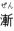 は必ず事を 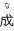 し、 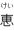 は必ず人を 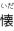 く。歴代の 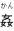 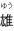 の如きも、 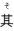 の を 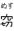 む者有れば、一時だも 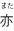 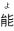 く 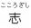 を 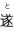 げき。 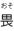 る きの 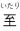 なり。」
意訳〈焦らず一歩一歩進めば必ず成功し、物心ともに人に恩恵を与えれば必ず味方となる。歴代の悪人も、これを心得て一時的とはいえ目的を成し遂げた者がいるのだから恐ろしいものだ。〉
・大事を成すに当たっては心が大きな要因になると思われる。悪人というからには善の心に乏しかったのだろうが、それでも志を遂げるのだから正しい心を持って漸と恵を心がければ間違いなく志を遂げられるだろう。
[ii] 同じ く 12 5 条「 む からざるの 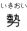 に動けば、 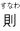 ち動いて られず。 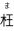 ぐ からざるの 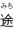 を めば、 ち んで 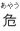 からず。」
意訳〈十分に心を省みても尚やむを得ないのならば、その勢いに従っても行き詰まることはない。正しい方向に進むのならば危険なことはない。〉
・他人から褒められたいとか良く見られたいというような【外】に端を発する行動では勢いが無くなったときに衰退してしまうが、世に益を成したいとか天命を成し遂げたいというような己の【内】から来る行動であれば行動する程に情熱が湧いてくるはずである。
孟子も「自らを省みて尚正しいと思うのならば相手が一千万人と言えども進む。」と遺している。
[iii] 同じ く 9 2 条「 むを 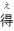 ざるに 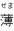 りて、 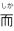 る 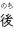 に 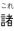 を外に発する者は花なり。」
意訳〈花のように満を持してつぼみを開く者は、美しく花開くものだ。〉
・真の成功者はその一挙手一投足や生き様が美しく、そこにいるだけで人に活力を与えるものだ。その姿、まさに花のようである。
[iv] 吉田松陰「かくすれば かくなるものと 知りながら やむにやまれぬ 大和魂」
意訳〈密航を計画すれば、捕まってしまうことは承知していたが、日本の未来のためにやむにやまれず行動を起こした。これこそが大和魂だ。〉
・当時は重罪であった米国への密航を計画したが失敗したので自首、獄中で詠んだ歌。
当時の日本と米国の軍事力差に危機感を覚え、相手の国力を正確に見定めるために密航を計画した。その後野山獄で囚人同士お互いに得意なことを教え合った。出獄後、松下村塾を開塾する。